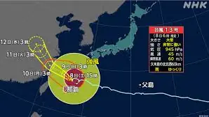
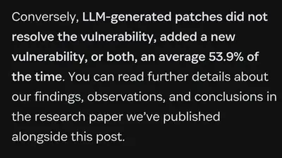
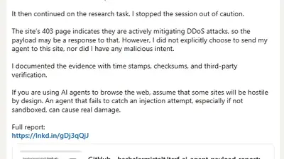
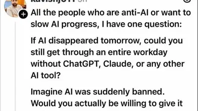
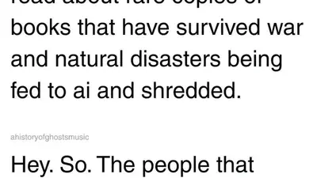

George Takei
@georgetakei.bsky.social
· 08/07 05:09· 命中「OpenAI」
Can we not? 🙄

9 200+ 次搜尋 時事2026.08.07
時事2026.08.07
 時事2026.08.06
時事2026.08.06
 時事2026.08.06
時事2026.08.06
 生活2026.08.06
生活2026.08.06
 3C2026.08.06
3C2026.08.06
 時事2026.08.05
時事2026.08.05
Social Lab（OpView 社群口碑資料庫）每週彙整各平台熱門事件。榜上的數據以圖表呈現， 這裡列出每週彙整的標題與觀測期間，點進去看完整排行。
 PTT
PTT
 Facebook
Facebook
 Dcard
Dcard
 Instagram
Instagram
Bluesky 的全站熱門話題，以英語圈的娛樂、體育、政治為主，僅供參考。
以 30 小時內、依讚數與轉發數排序，已過濾掉 AI 繪圖標籤與明顯洗版內容。
Can we not? 🙄
Joined the Times Tech Report to talk about how 70%+ of Amazon, Google and Microsoft's AI revenues come from OpenAI and Anthropic, meaning that outside of two unsustainable AI labs, there isn't anywhere near the demand to justify the capex or the data center buildout. www.youtube.com/watch?v=68X8...
Situations like Hank Green’s addiction-like dependency on an LLM should give EVERYONE pause. Why would we risk doing that to our kids? @mayor.nyc.gov
"LLM-generated patches did not resolve the vulnerability, added a new vulnerability, or both, an average 53.9% of the time." 👁️👄👁️ 1password.com/blog/why-ai-...

Here's this week's Better Offline monologue. 70% or more of hyperscaler AI revenues are from Anthropic and OpenAI's compute spend and revenue shares. Without two unsustainable AI labs, the era of hypergrowth is coming to an end. podcasts.apple.com/us/podcast/m... linktr.ee/betteroffline
he's also crying about it on linkedin

However you feel about LLMs, it is very clear at this point that this hole is utterly unfillable, and if Microsoft can't get more than single-digit billion dollars out of non-OpenAI/Anthropic customers, nobody can. They're the apex predators of infra and software sales. bsky.app/profile/inn3...
Premium Newsletter: The Hater's Guide To NVIDIA Part 2, the story of how it became the AI Bubble's GE Capital, propping up unsustainable companies and conning hyperscalers into buying GPUs to restart growth in the post-ZIRP economy. www.wheresyoured.at/premium-the-haters-guide-to-nvidia-part-2/
OpenAI was Microsoft's life-raft out of the hell of FY2023, when its growth slowed to about 7% year-over-year. It is barely at 18%, and all it cost was $260 billion in capex, its reputation, and every cultural fix Nadella made after Ballmer. OpenAI is their future, for better or worse.
Would I give up a splinter under my fingernail, a pebble in my shoe, or the whine of an errant mosquito in my ear? How shall I endure the deprivation?

Rated as "mostly true" by Snopes - A review of internal documents at Anthropic, revealed they bought millions of books in bulk, with a focus on "less common" and high-quality books, to "destructively scan". But unable to confirm for other AI companies. www.snopes.com/fact-check/a...

openai's vision of the future is more or less: - you will not be able to competitively perform cognitive labor without using openai tools - you will still be doing that labor - openai tools, and not you, will be deserving of all credit for the labor that is done
Reuters found an AI watermark on the slide showing it was made with OpenAI tools, and OpenAI says it's investigating.
I refuse to let LLM coin the sparkle icon/emoji, and I also refuse to let LLM coin the word PROMPT!!! ✨✨✨✨✨✨✨✨✨✨✨✨✨✨✨✨✨✨
if the LLM gonna scrape peoples social media posts then there’s all sorts of natural consequences with that lol
he's very mad about it actually github.com/bashalarmist...